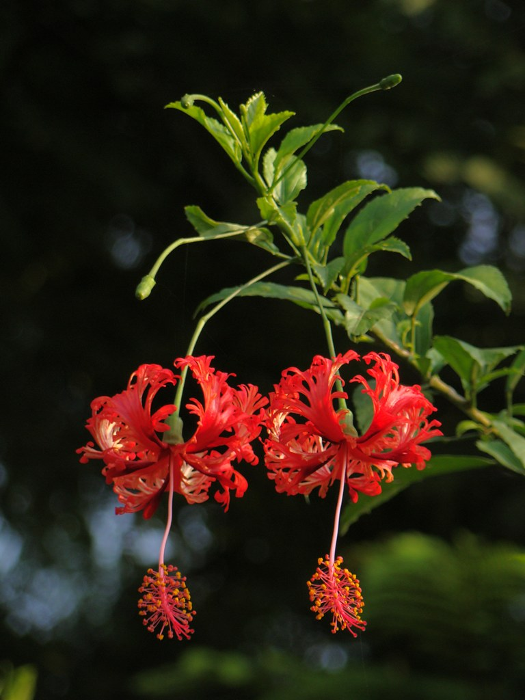

La Lanterne Japonaise, un bijou suspendu
Si la plupart des hibiscus tournent leurs corolles vers le soleil, l'Hibiscus Schizopetalus préfère la grâce de la révérence. Originaire des côtes d'Afrique de l'Est, cette fleur unique semble avoir été sculptée par un orfèvre. On l'appelle affectueusement « Lanterne Japonaise » ou « Corail » en raison de ses pétales finement découpés qui rappellent de la dentelle précieuse. Ses pétales rouges et orangés se recourbent vers le haut, laissant descendre un long tube staminal gracieux, comme le pendule d'une horloge ancien ne ou une lanterne oscillant doucement sous la brise.
« Une fleur qui ne se contente pas de fleurir, elle danse entre les feuilles. »Pourquoi elle fascine ?
- Sa structure aérienne : Ses pétales "frangés" (schizopetalus signifie "pétales fendus") lui donnent un aspect plumeux et léger.
- Son port retombant : Contrairement à la Rose de Chine, elle pousse au bout de longs rameaux souples, créant une cascade de lanternes rouges.
- Son exotisme : Elle apporte une touche de mystère et de sophistication à n'importe quelle collection botanique.
Un accord parfait avec votre jardin
Avec ses nuances corail et sa silhouette filiforme, la Lanterne Japonaise est l'alliée idéale des ambiances zen.